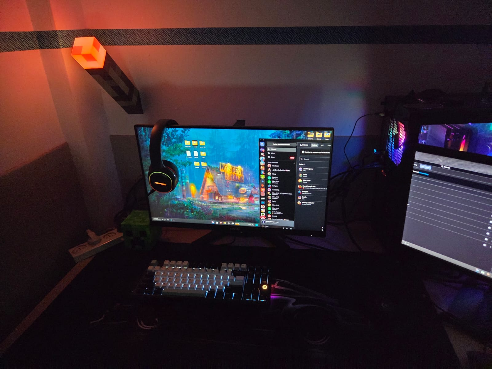

GALLERY 📸



I'm Jonathan cohen, 20 years old from Kfar Saba, Israel.
I love learning, exploring, and improving everything I do.
Currently diving into the world of QA.
When I'm not testing software, you'll find me gaming, training at the gym, or discovering new tech gadgets.
I enjoy challenges and always strive to pay attention to the little details that make a big difference.
| hobbies | JOURNEY TO QA |
|---|---|
| 🏋️ Gym / Working Out | Consistency, discipline, and a keen eye for details, just like spotting tiny bugs. |
| 🐶 Caring for dogs | builds patience and understanding of behavior, useful when testing software or users. |
| 🎮 Gaming | eveloping logical thinking, process analysis, and understanding what happens behind the scenes, all through playing video games. |
My journey started long before I even knew what QA was. Ever since I was a kid, I loved playing computer games and exploring technology. People would ask me “What is this? How does this work?” and I was always the first to answer. Since third grade, I’ve been playing video games, meeting people online, and discovering how things work behind the scenes. I always noticed annoying bugs in games, while others ignored them, I wanted to understand why they happened, how to work around them, and sometimes even use them to my advantage. Over time, my curiosity and passion for problem-solving led me to explore a career in QA and automation. I researched colleges and finally found Gal Metalon’s program. Why him? I went through thousands of reviews, he had the highest ratings, offered personal attention, a friendly environment, and a real sense of community. And that’s my path so far. I’m excited to continue learning, testing, and improving every step of the way!
Sometimes, you just need to step away from the screen and breathe the sea air. My weekend cruise with Mano Cruises was the perfect way to recharge, great food, amazing people, sunsets over the ocean, and time to reflect on my QA journey.